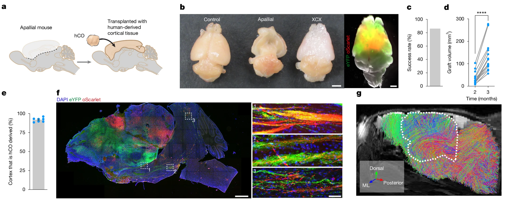

This week’s study crossed a long time period, from early brain-extract experiments in AD-related mouse models to the latest organoid–mouse models. Across these papers, you can see how animal models have been used to address different questions about disease mechanisms.
Different knockout and transgenic lines are particularly important, because researchers can use them to isolate different biological conditions or components of disease. At the same time, as discussed in the resource I included below, animal models cannot fully represent the human brain. We still face the fundamental challenge of studying the human brain: experiments in living humans must be non-invasive and harmless, while postmortem tissue only provides a limited snapshot of the disease process. Animal models cannot solve this problem completely, but they can at least provide additional experimental perspectives that are impossible to obtain directly in humans.
Transmission and spreading of tauopathy in transgenic mouse brain
Clavaguera et al., Nature Cell Biology (2009) 10.1038/ncb1901
Summary
They injected brain extracts from mutant P301S tau-expressing mice into different recipient mouse models to test whether tau pathology could be experimentally transmitted.
They found:
- Injection of P301S brain extract induced the assembly of wild-type human tau into filaments in ALZ17 mice, and the pathology increased over time and spread from the injection site to anatomically connected brain regions.
- Injection into non-transgenic mice could also induce murine tau filaments, but the pathology was much more limited and remained around the injection site.
- Tau immunodepletion from the P301S extract prevented the induction of filamentous tau pathology, showing that tau in the extract was necessary for this effect.
New knowledge
Ways to observe tau pathology:
- Gallyas-Braak silver staining positivity
- Presence of tau filaments by immunoelectron microscopy
- AT100 immunoreactivity: associated with filamentous/pathological tau
- AT8 immunoreactivity: indicates tau hyperphosphorylation
Personal highlights
- How they designed the experimental and control conditions:
- Pathological donor material: brain extract from P301S mice
- Main recipient model: ALZ17 mice expressing wild-type human tau
- Controls for the injected material: non-transgenic control brain extract and tau-immunodepleted P301S extract
- Additional recipient: non-transgenic C57BL/6 mice, used to test whether endogenous mouse tau alone could support the induced pathology
Comment
Very old paper. The important part is that they established an experimental system for inducing and studying tau transmission and spreading.
Interestingly, in the last paragraph, the writer wrote: ‘ In contrast to prion diseases, human tauopathies are not believed to be infectious.’ From today’s perspective, tau pathology is widely considered prion-like, although human tauopathies are not generally considered infectious diseases.
Also noted amyloid hypothesis is mature in 2009, so how to exclude potential amyloid effect in brain extract? They did tau immunodepletion: after removing tau in P301S brain extract, it can’t induce filamentous taupathy.
Removing endogenous tau does not prevent tau propagation yet reduces its neurotoxicity
Wegmann et al., The EMBO Journal (2015) 10.15252/embj.201592748
Summary
They used several transgenic and viral mouse models to test the hypothesis that trans-synaptic tau propagation, aggregation, and toxicity depend on the presence of endogenous soluble tau. This hypothesis was motivated by the prion model, in which the absence of endogenous PrP can prevent propagation-related toxicity.
They found:
- Tau propagation between neurons occurs independently of naïve endogenous tau.
- Stable tau accumulation in recipient neurons therefore does not rely exclusively on prion-like templated misfolding.
- The absence of endogenous tau markedly reduced mutant tau-induced neurotoxicity, gliosis, and brain atrophy, despite substantial NFT formation.
New knowledge
transgenic mouse models of tauopathy
- P301S (PS19): mice expressing human tau carrying the P301S mutation; commonly used as a robust tauopathy model.
- ALZ17: mice expressing wild-type human tau. They do not spontaneously develop filamentous tau pathology, which makes them useful as recipients in induced tau-seeding experiments.
- ECrTgTau: an inducible model with human P301L tau expression mainly restricted to the entorhinal cortex, allowing researchers to study propagation from EC to connected regions such as the dentate gyrus.
- rTg4510: an inducible model that strongly overexpresses human P301L tau in the forebrain and develops severe tau pathology and neurodegeneration.
- Mapt 0/0 : tau-knockout mice lacking endogenous mouse tau.
More taupathy markers
- CP13: pS202/pS205, early/pathological phospho-tau marker
- PHF1: pS395/pS404, pathological phospho-tau marker
- 12E8: pS262/pS356, associated with tau dissociation from microtubules
Personal highlights
- Why they crossed ECrTgTau and Mapt 0/0 to create non-endogenous murine tau background. why in this way can exclude endogenous murine tau protein? Because ECrTgTau express transgenic human P301L tau and endogenous mouse tau at the same time, after crossing with Mapt 0/0, can have the mouse with **human P301L tau but no mouse endogenous tau. If human P301L tau can still reach DG from EC, means propagation does not require endogenous mouse tau as a substrate. Same for rTg4510‐ Mapt 0/0 .
Deep brain stimulation of thalamic nucleus reuniens promotes neuronal and cognitive resilience in an Alzheimer’s disease mouse model
Shoob et al., Nature Communications (2023) 10.1038/s41467-023-42721-5
Summary
In a familial AD mouse model, interictal epileptiform spikes (IESs) emerge in the CA1 and mPFC during anesthesia and are associated with subsequent working-memory impairment. Because the thalamic nucleus reuniens (nRE) provides an important input to the hippocampal–prefrontal circuit, this study investigated whether manipulating nRE activity could regulate these abnormalities.
They found:
- Anesthesia exposes abnormal electrophysiological, behavioral, and transcriptional responses in the hippocampus of APP/PS1 mice.
- Phasic and tonic stimulation of the nRE bidirectionally modulates CA1 and mPFC epileptiform activity: tonic DBS suppresses IESs, whereas phasic DBS increases them.
- Tonic nRE stimulation restores circuit-level homeostasis and protects against anesthesia-related synaptic and working-memory impairment.
Personal highlights
- How they quantify the short-term synaptic plasticity? by stimulating the nRE and recording fEPSPs in CA1; paired-pulse ratio was used as a measure of short-term synaptic facilitation.
Comment
This study first made me really aware that the brain is electrical.
Developmental xenocortication using human-derived organoids in mice
Kaganovsky et al., Nature (2026) 10.1038/s41586-026-11032-2
Summary
This study established a transplantation platform by genetically depleting much of the mouse neocortex and hippocampus during development and then engrafting human stem-cell-derived cortical organoids (hCOs) into the resulting cortical space to generate xenocortical mice.
They found:
- hCOs occupied most of the available cortical tissue volume and generated diverse human cortical cell types, including layer 5 extratelencephalic projection neurons.
- The grafts became functionally integrated and displayed organized spontaneous neural activity resembling developing neural circuits.
- Compared with controls, xenocortical mice broadly preserved locomotion, but showed selective differences in limb coordination and altered organization of spontaneous behavior.

Personal highlights
- They used a conditional knockout strategy to create an immunodeficient apallial mouse. Specifically, they deleted Esco2 in Emx1-expressing dorsal and medial pallial cells, inducing targeted developmental cell loss on a SCID background.
- This produced a strong depletion of dorsal pallial-derived glutamatergic neuronal classes, including neuronal subclasses from the neocortex and hippocampus, while olfactory bulb and many non-pallial cell classes were preserved. Ventral/lateral pallial glutamatergic subclasses, including those associated with amygdala and piriform cortex, were also relatively preserved
- DWI showed that the principal direction of local water diffusion within the XCX graft was predominantly dorsoventral (DV), with secondary mediolateral and anteroposterior components.

Comment
This is crazy. I can see the workload behind.
From this study, I can also see how different research areas use completely different measurements and spatial or temporal resolutions to study the brain.
Resource
I read a newsletter from owl posting - this is from the industrial perspective, and discussed about the implementation of organoid in AD study, especially about clinical drug development.
and this article recommended in this blog.
Comment
This paper is a direct extension of the prion-like propagation question raised by the earlier studies. Instead of simply asking whether pathological tau can propagate, it asks whether endogenous tau is required for propagation and toxicity.
The propagation of tau pathology was largely preserved, but its toxicity was strongly reduced after endogenous tau removal. This also suggests that tau propagation, NFT formation, and neurodegeneration are related but not identical processes.
What surprised me is how much of the idea that misfolded tau can act as a seed and propagate in a prion-like manner was experimentally developed through a series of mouse-model studies.